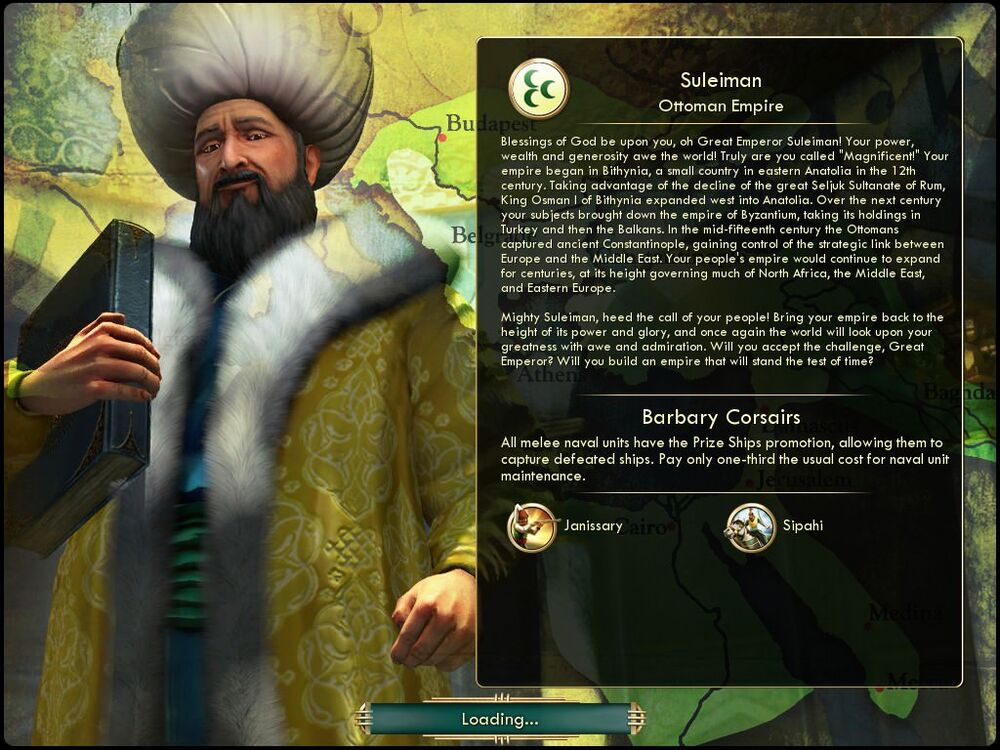

술레이만 Suleiman오스만 The Ottomans |
|  |
| 오, 위대한 황제 술레이만이여, 신의 축복이 함께하기를! 그대의 권세와 부강함, 그리고 자비로움에 세상이 경배할 것입니다! 그대야말로 '대제'라는 이름에 적합한 왕입니다! 그대의
제국은 12세기에 아나톨리아 동부의 소국 비티니아에서 시작되었습니다. 비티니아의 오스만 1세 왕은 셀주크 술탄국 등의 쇠퇴를 틈타 서쪽으로 아나톨리아까지 영토를 확장했습니다.[1]
그 후 100년 동안 그대의 신민은 비잔티움 제국을 정복하여, 그 지배 하에 있던 터키와 발칸 제국을 합병했습니다. 15세기 중반 오스만 제국은 고대 콘스탄티노플을 정복하여,
유럽과 중동을 잇는 전략적 요지를 손에 넣었습니다. 오스만 제국은 몇 세기 동안 확장을 거듭하여, 그 전성기에는 북아프리카, 중동, 동유럽의 대부분을 아울렀습니다.
위대한 술레이만이여, 백성의 부름을 들으십시오! 오스만 제국을 다시금 그 권세와 영광의 정점에 올려놓아, 세상이 그대의 위대함을 칭송하도록 하십시오. 위대한 황제여, 도전을 받아들여 세월의 시련을 이겨낼 문명을 건설해 주시겠습니까? |
| 속성 | |
|---|---|
| 특성 | 바르바리 해적 (Barbary Corsairs) 모든 근접 해군 유닛은 전리품 선박 승급(물리친 적 해상 유닛이 문명에 가담할 수 있습니다.)을 받습니다. 해상 유닛의 유지비가 1/3로 줄어듭니다. |
| 고유유닛1 |
예니체리
(Janissary) 머스킷병을 대체하는 고유 유닛입니다. 공격 시 전투력 보너스 +25%를 얻는 승급과 야만인을 제외한 적을 죽이면 HP가 50 회복되는 승급을 받습니다. |
| 고유유닛2 |
시파히
(Sipahi) 창기병을 대체하는 고유 유닛입니다. 이동력이 4에서 5로 증가하고, 시야 +1 승급과 타일 약탈 시 이동력을 소모하지 않는 승급을 받습니다. |
| 시작지점 | 해안 |